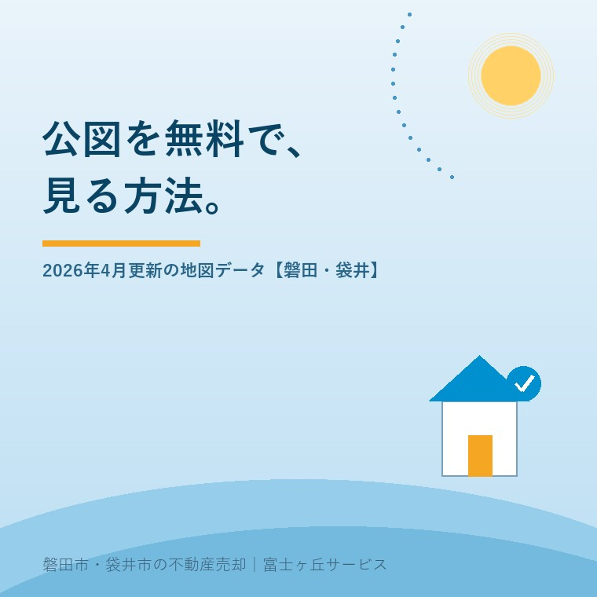

2026年8月26日｜カテゴリ：土地と境界／調べ方

この記事の要点
Q. 実家の土地がどこからどこまでか分からないんです。公図って無料で見られますか。
A. 法務省の登記所備付地図データが2026年4月15日13時に更新され、Ｇ空間情報センターで無償公開されています。公図も入っています。ただし形式は地図ＸＭＬで、そのままでは地図として表示できません。1筆だけなら360円のほうが早いです。
磐田市・袋井市・森町では、介護施設の運営から不動産事業を始めた富士ヶ丘サービスのような「介護×不動産」専門の会社に相談するという選択肢があります。
実家の土地が、どこからどこまでなのか分からない。地番も、役所で言われた番号と登記の番号が合っているのか自信がない。この状態のまま売却の相談に踏み切れない、という方が磐田市と袋井市にいます。
この記事は2026年8月26日時点で、法務省「地図データのＧ空間情報センターを介した一般公開について」（令和8年4月15日）、法務省「登記手数料について」（令和7年4月1日〜）、法務省「登記情報提供サービスの利用料金等一覧」（令和8年4月1日改定）、磐田市オープンデータ（2026年6月10日更新）を確認して書いています。公図と実測の関係は公簿売買と実測売買の違いに、隣地との立会いは境界立会いと筆界確認書に書きました。
法務省は、全国の登記所備付地図の電子データを、Ｇ空間情報センターを通じて無償で一般公開しています。公開が始まったのは令和5年1月23日で、直近の更新は令和8年（2026年）4月15日（水）13時です。法務省のページには、こう書かれています。
「令和８年４月１５日（水）１３時から、更新後の登記所備付地図の電子データが公開されています」「更新後の電子データは、令和８年２月時点の地図データを抽出した情報です。」（法務省「地図データのＧ空間情報センターを介した一般公開について」令和8年4月15日）
Ｑ＆Ａによれば、法務省が公開しているのは令和7年2月時点と令和8年2月時点の2か年分です。次の更新は令和9年春頃を予定し、その後も年に1回程度とされています。つまり手元で見られる図面は、最新でも半年前の状態です。
公図という言葉は、登記の世界では2種類の図面をまとめて指しています。法務省のＱ＆Ａは、公開データの中身をこう説明しています。
「(1)不動産登記法第１４条第１項の地図に加え、(2)不動産登記法第１４条第１項地図が備え付けられるまでの間、備え付けることができるとされている地図のデータが含まれています」（法務省Ｑ＆Ａ）
(1)が正式な「14条地図」、(2)が一般に公図と呼ばれている「地図に準ずる図面」です。日常の会話で公図と言うとき、多くは(2)を指しています。無料公開されているデータには、両方が入っています。
ここで注意が要ります。法務省は「精度が低い当該図面しか備え付けられていない地域については、地図との重ね合わせが困難な場合があります」「登記所が保有しているデータは、地図の整備状況によってその精度が異なります」と書いています。地図に準ずる図面は、位置も形も現地と一致しません。明治の地租改正のころに作られた図面を引き継いだものが、いまも残っています。地籍調査の進み具合との関係は公簿売買と実測売買の違いに整理しました。
この地図データの実物は、地図ＸＭＬフォーマットです。法務省は次のように注記しています。
「データの形式は加工が可能な地図ＸＭＬフォーマットです。地図ＸＭＬフォーマットを地図の形式で表示するためには、ソフトウェア等によるデータ変換作業が必要になりますので、ご留意ください。」（法務省）
Ｑ＆Ａでも、「ダウンロードしてすぐに地図として見ることができますか」という問いに対し、「地図データを地図の形式で表示するためには、パソコン等にアプリケーションをインストールすることが必要となります」と答えています。入手はＧ空間情報センターへのログインが要り、利用は無償、登記所備付地図データ利用規約に抵触しない範囲で自由とされています。
つまり「無料で公図が見られる」というより、「無料で公図の元データがもらえる」というのが正確なところです。ダウンロードしたファイルをそのまま開いても、数字と記号の羅列が出てくるだけです。
公図を1枚だけ確認したい持ち主の方に、私は無料のデータをすすめていません。理由は費用ではなく、手間です。法務省が公表している料金を並べます。
| 方法 | 費用（1件・1筆あたり） | 手間 | 証明になるか |
|---|---|---|---|
| Ｇ空間情報センターの地図データ | 無料 | ログイン・ダウンロード・変換ソフトの導入 | ならない |
| 登記情報提供サービス（地図・図面） | 360円 | 利用登録して画面で閲覧 | ならない |
| 法務局の地図等情報（オンライン請求・窓口交付） | 440円 | オンライン請求のうえ窓口へ | なる |
| 法務局の地図等情報（オンライン請求・送付） | 470円 | オンライン請求して郵送を待つ | なる |
| 法務局の地図等情報（書面請求） | 500円 | 窓口または郵送で請求 | なる |
法務省「登記手数料について」（令和7年4月1日〜）、法務省「登記情報提供サービスの利用料金等一覧」（令和8年4月1日改定・登記手数料350円＋指定法人手数料10円）、法務省「地図データのＧ空間情報センターを介した一般公開について」（令和8年4月15日）により作成。2026年8月26日確認。地図等情報の手数料の単位は「1筆の土地又は1個の建物」です。
無料と500円の差は、コーヒー1杯分です。実家の土地が3筆あっても、全部そろえて1,500円。ここを節約するために変換ソフトを入れる時間があるなら、私はその時間を、隣の家の方に電話をかけて境界の話ができるかどうか探ることに使ってほしい。お金で買えるのは書類で、買えないのは隣家との関係のほうです。
この記事を書く前、私自身が最初に思ったことをそのまま書きます。そんな方法があるのか、と思いました。そして次に浮かんだのは、不動産屋も使えるのか、という疑問でした。
答えは、使えます。利用規約に抵触しない範囲で自由に利用できるとされており、業として使うことも妨げられていません。ただし、私の商売で毎日役に立つかというと、そうではありません。使いどころは、はっきり分かれます。
| 場面 | 無料の地図データ | 私の実務での判断 |
|---|---|---|
| 1筆の形と地番を確認したい | 手間が見合わない | 登記情報提供サービスで360円 |
| 契約書に付ける図面が要る | 証明にならない | 法務局で地図証明書 |
| 地区一帯の筆の並びを俯瞰したい | 向いている | 広い範囲を一度に見るならこちら |
| 相続で山林や畑がどこにあるか分からない | 向いている | 他の資料と重ねて当たりをつける |
| 分筆・合筆の直後の状態を見たい | 使えない | 年1回更新のため反映が遅れる |
法務省の公開条件および料金表をもとに、宅地建物取引士としての判断で作成した表です。2026年8月26日時点の私の使い分けです。
私は日々の仕事でデジタルの道具を使っていますし、無償のデータが増えることには前向きです。ただ、地図データを1つ入れたからといって、境界が分かるわけではありません。図面は現地の代わりになりません。データに寄りかかると、現地を見に行かない癖がつく。これが一番怖いと私は考えています。亡くなった親の土地の所在を探す手順は所有不動産記録証明制度の使い方にも書きました。
磐田市は、市内の土地の地番情報を示した地番図を、オープンデータとして公開しています。磐田市の公開情報によれば、形式はzip、容量は41.7MB、令和8年（2026年）1月1日時点のもので、ライセンスはクリエイティブ・コモンズ 表示 2.1 日本です（ページ更新日2026年6月10日）。
あわせて磐田市は「磐田市地図情報提供サービス」を用意しており、道路の路線名および幅員、都市計画情報（用途地域・建ぺい率・容積率など）、上下水道管網図の情報を調べることができますと案内しています。売却の相談で最初に見る道路付けは、ここで当たりがつきます。
袋井市は「どまんなか袋井navi」という地図情報配信サービスを持ち、縮尺1/2,500の地形図データを公開しています。ただし、磐田市の地番図に相当するオープンデータは、2026年8月26日時点で私には見つけられませんでした。森町についても同様です。ここは未確認のまま書いておきます。市や町によって、出しているものが違います。
制度への評価は、良い点から書きます。私は3つを評価しています。
注文も2つ書きます。批判ではなく、公図を毎週見ている一事業者からの報告です。
1つ目。持ち主の方が地図を「見る」ところまで届いていません。加工できる形で出す意義は分かります。ただ、実家の土地の形を知りたいだけの70代の持ち主に、変換ソフトの導入までは無理です。データの公開と同じページに、ブラウザで1筆だけ表示できる簡単な窓口があれば、相談の入口はずいぶん広がります。
2つ目。年1回の更新では、売買の現場には使えません。分筆した土地の登記が終わっても、次の春まで公開データには載りません。もっとも、全国の地図データを抽出して整える手間を考えれば、年1回でも相当な作業だとも思います。どこまで求めてよいのか、私はまだ決めきれずにいます。当面は、無料データで当たりをつけて、決めるときは360円か500円を払う。この使い分けで足ります。
実家の土地の範囲があいまいなままでも、今日できる確認があります。売ると決めていなくても価値が減らないものを3つ挙げます。
今日、売るか売らないかを決める必要はありません。地番と筆数、土地の形、前面道路の幅。この3つが分かっているだけで、半年後にどの選択をするにしても必ず効いてきます。売らない選択も含めて、材料をそろえてから決めればいい。図面は逃げませんが、隣で立会いができる方の年齢は待ってくれません。
当社は磐田市見付で介護施設を運営するところから不動産の仕事を始めました。ご相談の入口は、たいてい「親が施設に入った」「親を看取った」です。土地の範囲が分からないという話は、そのついでに出てきます。
価格のご相談を受けても、査定額を先に出しません。先に見るのは、道路と境界と名義です。公図を1枚出せば、その土地が旗竿なのか、無道路なのか、里道や水路が挟まっていないかが分かります。境界の確定は土地家屋調査士の仕事なので当社は行いませんが、そこへ持ち込む前の材料をそろえるところはお手伝いできます。
目指しているのは「高く売る」だけではなく、「家族が困らない売却」です。事実を整理する道具としてふじがおか実家カルテを用意しています。
地図データの利用条件はＧ空間情報センターの利用規約を、証明書が必要な場合は法務局を、境界の確定は土地家屋調査士を、相続登記は司法書士をご確認ください。
ふじがおか実家カルテ｜地番があいまいなままでも整理できます
課税明細書1枚から、筆の数と道路付けを読み解きます。
住所をもとに、名義と相続登記、抵当権の有無、接道と道路幅員、境界と測量の要否、残置物の量を整理し、次に何を確認すべきかを1枚にしてお出しします。作成料0円・入力約1分。申込みだけで売却依頼にはなりません。
データとしては無料で入手できます。法務省は登記所備付地図の電子データをＧ空間情報センターで無償公開しており、2026年4月15日13時から令和8年2月時点のデータが公開されています。不動産登記法第14条第1項の地図に加え、地図に準ずる図面（公図）のデータも含まれます。ただし形式は加工が可能な地図ＸＭＬフォーマットで、地図の形で見るにはアプリケーションの導入が必要です。
なりません。法務省は「今回公開される地図データは……法務局における証明機能を有するものではありません」「公開する地図データは、地図証明書・図面証明書に代替するものではありません」と明記しています。売買や登記の場面で証明が要るときは、法務局で地図証明書・図面証明書を取得してください。窓口での書面請求は1筆または1個につき500円です。
登記情報提供サービスが早いです。地図及び図面が記録されたファイルの情報は1件360円（登記手数料350円＋指定法人手数料10円／令和8年4月1日改定）で、画面で確認できます。無料の地図データはＧ空間情報センターへのログインとダウンロード、変換ソフトの導入が必要で、1筆だけ見たい方には手間が見合いません。証明が必要な場合は法務局へ。

この記事を書いた人：大石浩之（宅地建物取引士）
磐田市・袋井市・森町で「介護×相続×空き家」に特化した不動産売却支援を行う富士ヶ丘サービスの代表取締役・宅地建物取引士。介護施設の運営から不動産事業を始めた経験をもとに、売主とご家族が困らない売却を一件ずつお手伝いしています。プロフィール
本記事は2026年8月26日時点で、法務省・磐田市・袋井市が公表している情報に基づく一般的な整理であり、個別の土地の範囲や境界を判断するものではありません。公開データの更新時点・料金・利用条件は変わります。無料の地図データには法務局の証明機能はありません。証明が必要な場合は法務局へ、境界の確定は土地家屋調査士へ、相続登記は司法書士へ、税の取扱いは税理士へご確認ください。個別のご相談は当社までどうぞ。
磐田市・袋井市・森町の実家じまい・相続空き家相談
地番が分からないままでも相談できます
住所があいまいでも、課税明細書や写真から名義・道路・境界・残置物の確認順を整理します。カルテ申込またはLINEで状況を送ってください。
富士ヶ丘サービス株式会社／静岡県磐田市見付5789番地1／TEL:0538-31-3308／静岡県知事 (2) 第14083号／代表取締役・宅地建物取引士 大石 浩之